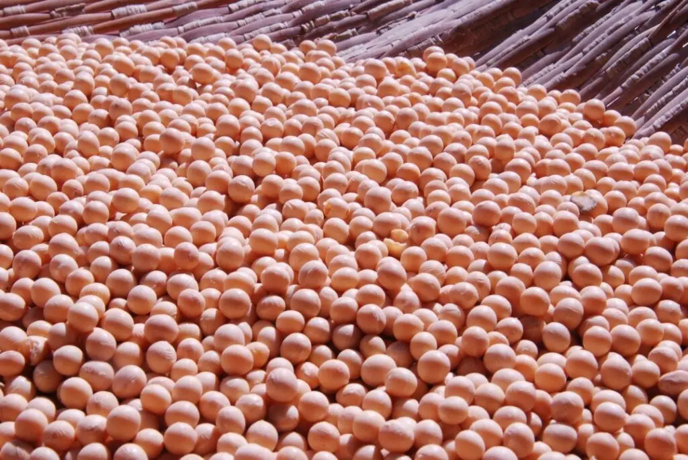

Um olhar
para o mercado.
Acompanhe informações de commodities e conecte o que acontece no mercado ao seu próximo ciclo.
Explorar o painel de soja
Soja em perspectiva.
Informação para acompanhar.
Consulte o painel de preços de soja disponibilizado pela Nexar Agro.
Painel de soja
Explore os dados e filtros no painel interativo.
Histórico e datas conforme painel do IMEA, disponibilizado pela Nexar Agro.Abrir painel em outra aba
Entenda o mercado.
Amplie seu repertório.
Da colheita à comercialização, acompanhe os conteúdos que ajudam a compreender o caminho da soja.
Guia de comercialização da soja Commodities na Nexar AgroVamos planejar
o próximo ciclo?
Encontre a semente e as soluções para o seu campo. Comece uma conversa com a Petrovina.
Orçamento 100% online